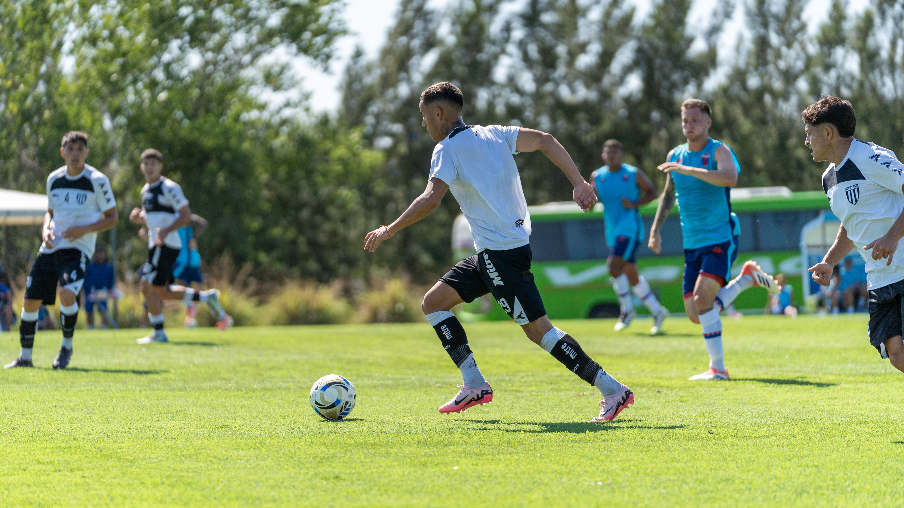
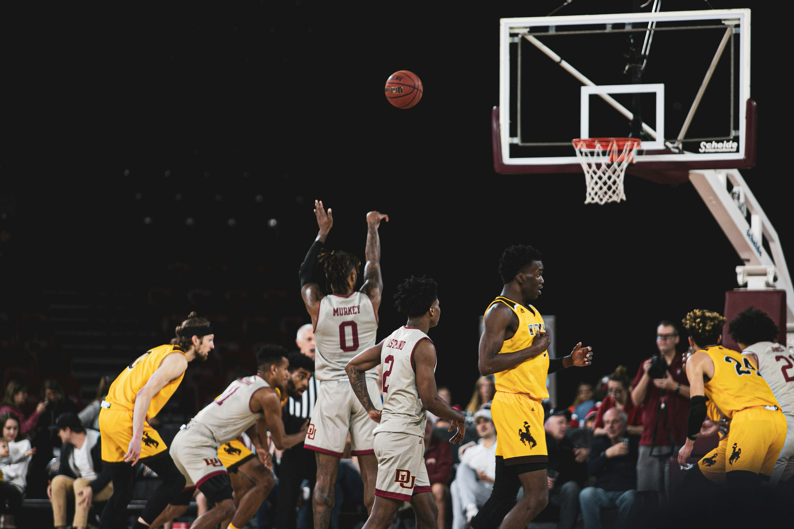
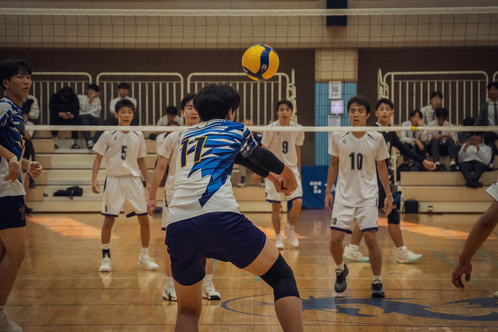
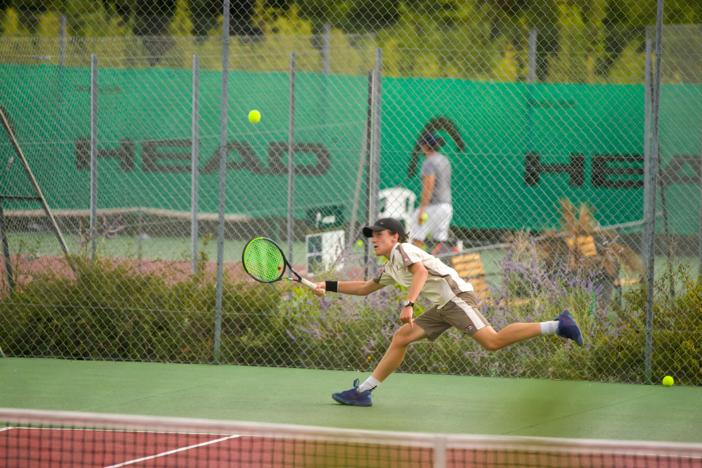
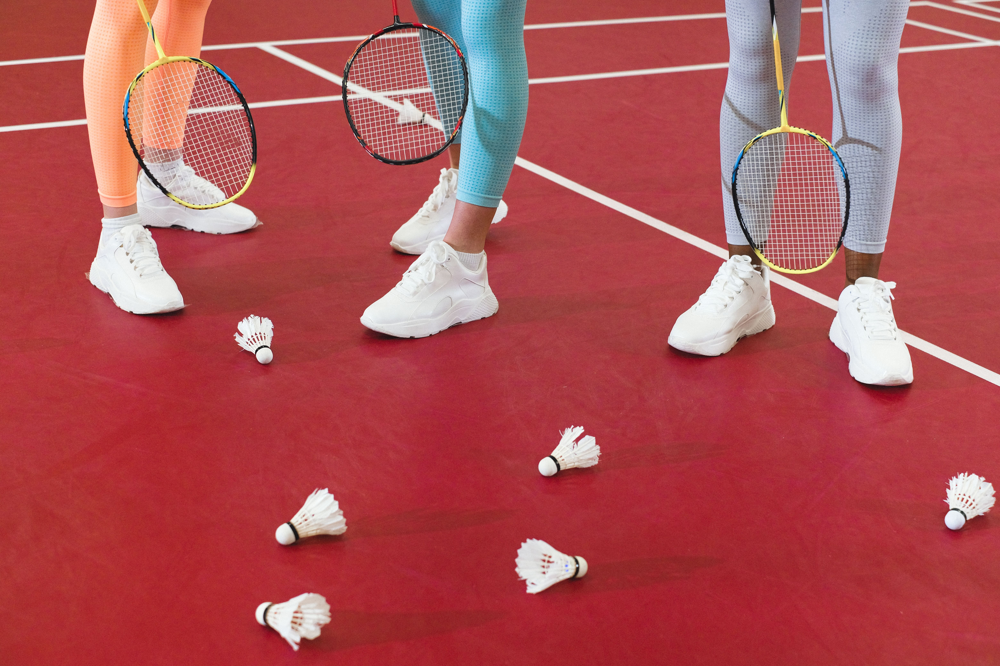
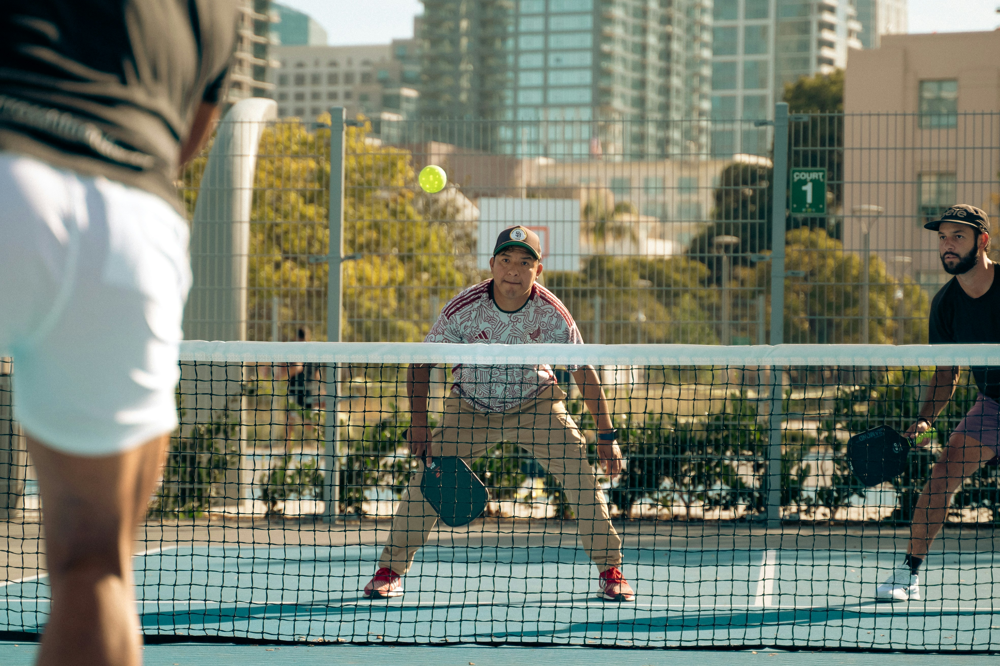
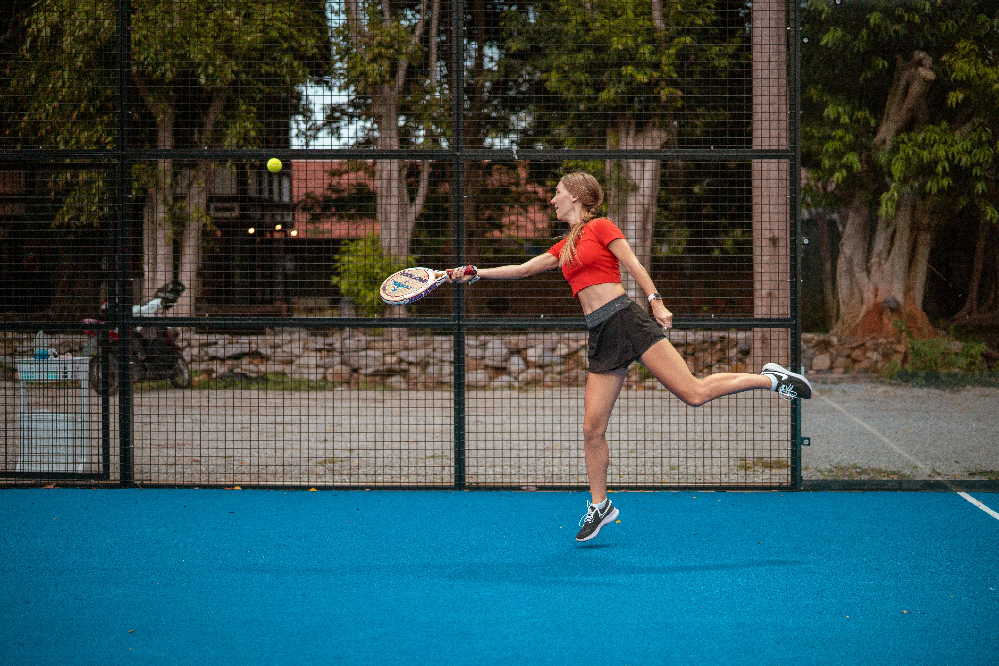
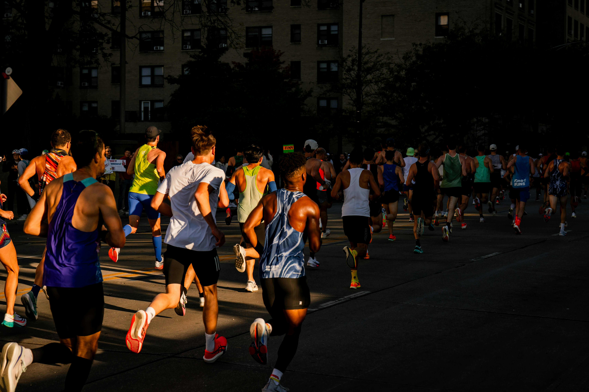
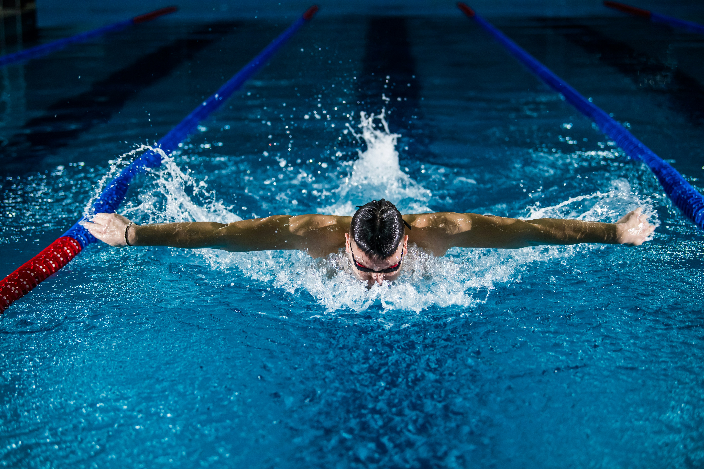
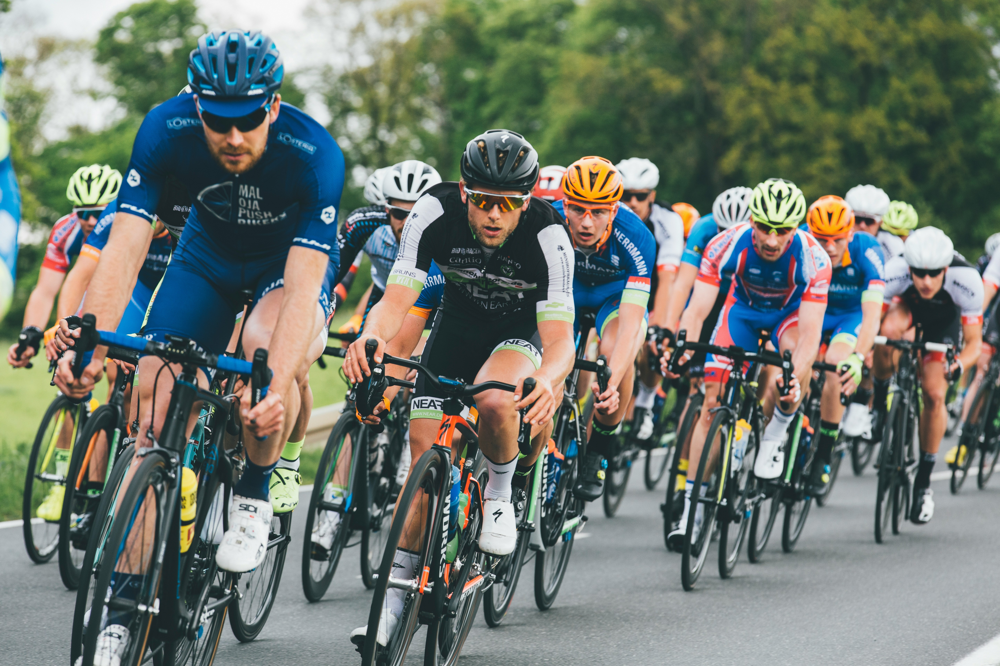

Sports de Ballons

Le Soccer
Le soccer est un sport d’équipe où deux équipes de onze joueurs s’affrontent pour marquer le plus de buts possible. Les joueurs utilisent principalement leurs pieds pour faire des passes, dribbler et tirer au but. La communication et la coopération sont essentielles pour créer des occasions de marquer et défendre efficacement.

Le Basketball
Le basketball est un sport où deux équipes de cinq joueurs tentent de marquer des points en lançant le ballon dans le panier adverse. Pour avancer sur le terrain, les joueurs utilisent des dribbles, des passes et des tirs. Ce sport demande de bons réflexes, de la précision et une bonne coordination entre les coéquipiers.

Le Volleyball
Le volleyball est un sport d’équipe où deux équipes, généralement composées de six joueurs, s’affrontent de chaque côté d’un filet. Le but est de faire tomber le ballon dans le terrain adverse sans qu’il touche le sol de son propre côté. Les joueurs doivent bien communiquer et coordonner leurs mouvements pour réussir leurs passes, leurs attaques et leurs blocs.
Sports de Raquettes

Le Tennis
Le tennis est un sport de raquette qui se joue seul ou en équipe de deux, de chaque côté d’un filet. Le but est de frapper la balle pour qu’elle rebondisse dans le terrain adverse sans que l’adversaire puisse la retourner correctement. Ce sport demande de la précision, de bons réflexes et beaucoup de concentration.

Le Badminton
Le badminton est un sport de raquette où les joueurs frappent un volant par-dessus un filet pour le faire tomber dans le terrain adverse. Il peut se jouer en simple ou en double. Les échanges sont souvent rapides et demandent de bons réflexes, de l’agilité et une bonne coordination.

Le Pickleball
Le pickleball est un sport de raquette qui combine des éléments du tennis, du badminton et du tennis de table. Il se joue avec une balle en plastique perforée et une raquette rigide, sur un terrain séparé par un filet. Facile à apprendre, il demande tout de même de la précision, de bons réflexes et une bonne stratégie.

Le Padel
Le padel est un sport de raquette qui se joue généralement en double sur un terrain entouré de vitres et de grillages. Les joueurs utilisent les murs pour poursuivre les échanges et tenter de marquer des points. Ce sport combine stratégie, réflexes et travail d’équipe, tout en étant accessible aux débutants.
Sports d'Endurance

La Course à Pied
La course à pied est une activité physique qui consiste à se déplacer en courant, que ce soit pour le plaisir, pour rester en forme ou pour participer à des compétitions. Elle permet de développer l’endurance et demande de la régularité, une bonne gestion de l’effort et de la persévérance.

La Natation
La natation est un sport qui consiste à se déplacer dans l’eau en utilisant différentes techniques de nage. Elle permet de travailler l’endurance, la coordination et la respiration tout en faisant participer plusieurs groupes musculaires. C’est aussi une activité pratiquée autant pour le loisir que pour la compétition.

Le Cyclisme
Le cyclisme est un sport qui consiste à se déplacer à bicyclette, sur des routes, des pistes ou des sentiers. Il peut être pratiqué pour le loisir, les déplacements ou la compétition. Le cyclisme permet de développer l’endurance, la coordination et la force des jambes, tout en découvrant différents environnements.